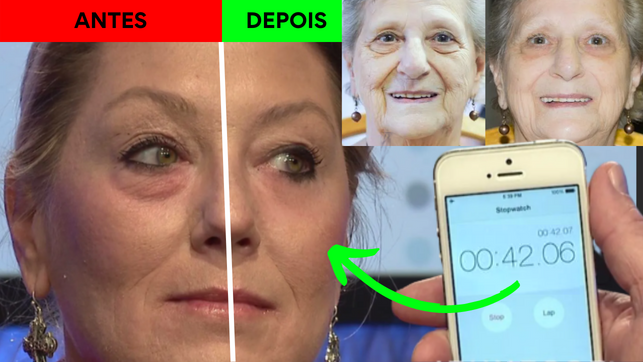
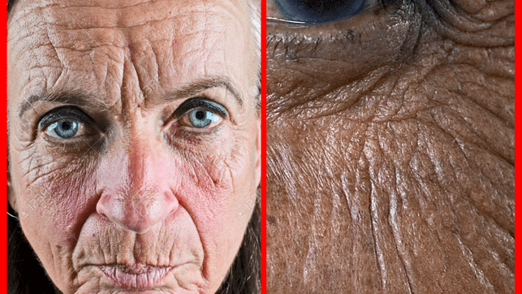
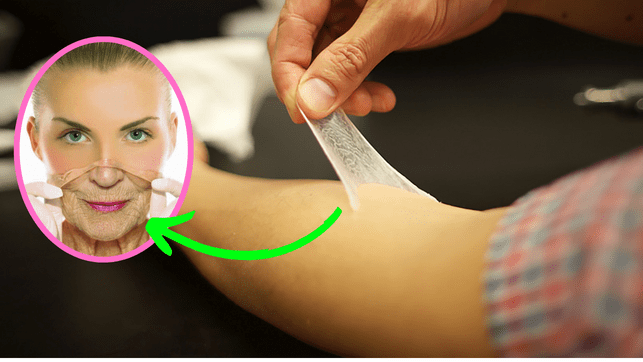
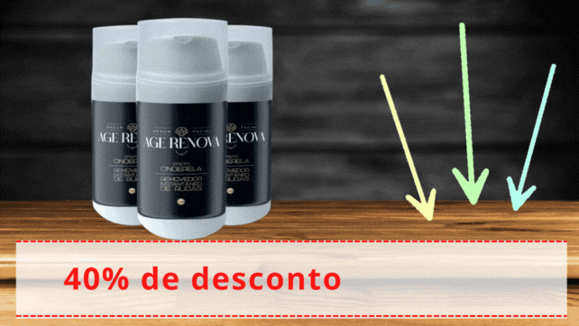
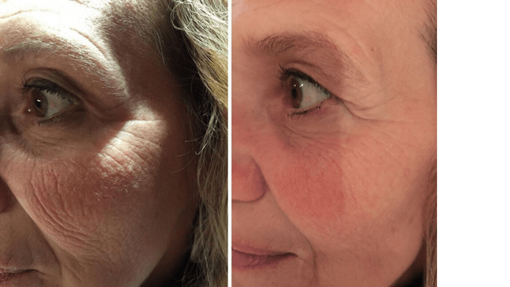
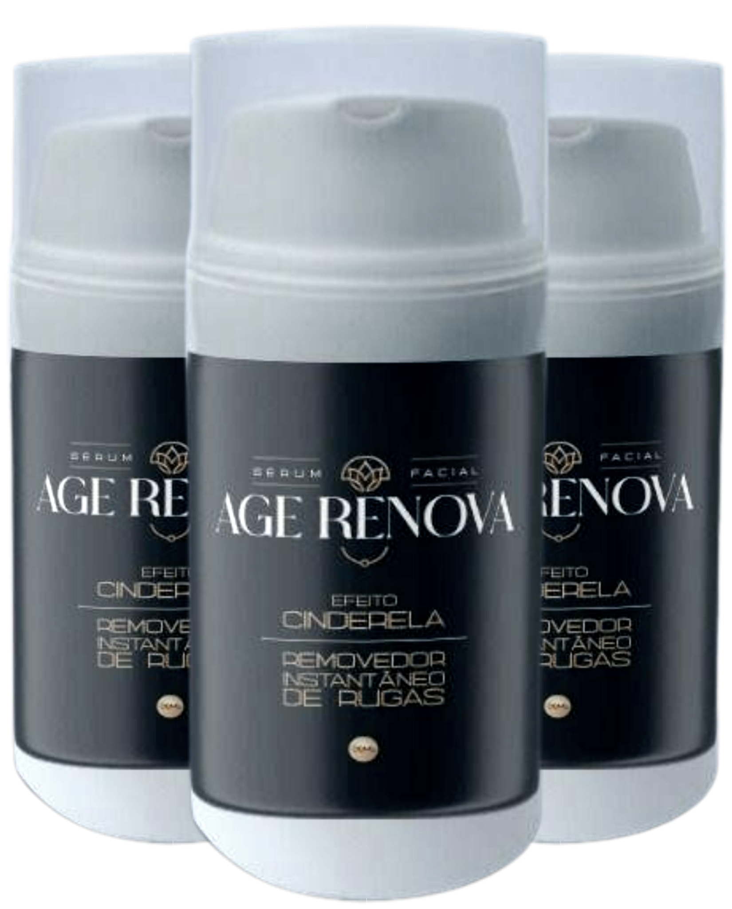

Por Rodrigo Galvão - Atualizado em 8 de Julho 16:23h
9 a cada 10 mulheres trocam botox por essa nova tecnologia que apaga as rugas de forma instantânea.
Em 2023 já é possível. Mulheres entre 35 a 72 anos estão trocando seu botox comum por essa nova tecnologia mais acessível, que é capaz de apagar as rugas profundas já nos primeiros minutinhos de uso.
O efeito cinderela é a revolução do tratamento para as rugas.
Uma pesquisa revela que 95,7% das mulheres acima de 35 anos, comentam como a aparência envelhecida da sua pele vem afetando as suas vidas e destruindo sua autoestima.
A pele fina e com aparência amassada as faziam se sentir como se estivesse vivendo aprisionada em uma pessoa com o corpo mais velho.
Esses sentimentos negativos sobre sua aparência perseguem milhões de mulheres espalhadas pelo o mundo.
E tudo pode piorar, pois segundo a pesquisa da universidade de Harvard as rugas profundas estão surgindo cada vez mais cedo em mulheres com idade acima de 29 anos.
Não é somente por causa da idade, genética e maus cuidados no dia a dia.
Algumas mulheres já estão sentindo as consequências em sua pele.
Métodos mentirosos arrancando dinheiro das brasileiras.
Por esse motivo algumas mulheres recorrem a práticas como: Uso de protetor solar, colágenos em pó, cápsulas e até procedimentos estéticos caros com um curto prazo de duração.
Mas o colágeno, cápsulas, e esses outros tratamentos alternativos não tratam esse tipo de pele mais fina, com aparência de pele ressecada e enrugada. Isso é um mito!
Isso tudo explica o porquê nenhuma mulher sente os resultados reais na sua pele por um longo período de tempo.
Mas apesar de nenhuma mulher ter morrido por ter uma pele feia e um pescoço de tartaruga, isso faz mal pra sua autoestima.
E com a sua autoestima abalada pode fazer sua vida virar um inferno.
Sofrendo as consequências de ter rugas.
O seu marido passa a não te olhar mais, suas amigas começam a rir da quantidade de filtros que você usa em suas fotos para postar nas redes sociais, comentam que você está acabada e falam disso pelas suas costas sempre que você sair da roda de conversa.
Você para de tirar fotos e o pior de tudo é que você perde a alegria de simplesmente se achar bonita ao se olhar no espelho.
Como um Elefante Africano ajudou a explicar o porquê temos rugas profundas?
Estudo revolúcionario sobre rugas, trouxe esperanças para mulheres.
Como toda descoberta revolucionária, tudo isso começou por um belo acidente, quando um grupo de cientistas e biólogos da Coreia, estavam estudando o comportamento dos elefantes, o modo como eles gostam de se banhar com lama.
Até então, a suspeita era que a lama ajudava somente a manter sua pele resfriada, quando na realidade eles banham seus corpos para proteger o corpo da radiação solar.
Uma das partes que ficam mais expostas sem a proteção de lama é sua cabeça cheia de rugas e extremamente profundas, essa condição é natural para a sobrevivência e serve para proteger que a radiação prejudique sua saúde.
Isso também explica o motivo pelo qual até mesmo o bebê elefante possui rugas tão profundas, mesmo sendo tão pequeninos.
Essas rugas não surgem por causa do envelhecimento, genética ou nada do tipo.
Por isso não é qualquer tratamento que consegue fazer essas rugas sumir.
Rugas profundas não são fáceis de se livrar.
Esse tipo de rugas funciona como um mecanismo de proteção contra a radiação solar.
E depois de 13 anos de análises, o grupo de cientistas infelizmente conseguiu provar uma grande semelhança dessas rugas em nosso corpo humano.
O nosso corpo constrói rugas e com aspecto profundo semelhante para proteger o corpo.
Se você não corrigir isso logo, sua pele continuará piorando a partir de acordo com o tempo.
E se você é mulher e possui entre 35 e 72 anos, leia essa matéria completa e entenda como esse estudo ajudou os cientistas a desenvolverem uma espécie de segunda pele.
Que segundo dados, 9 a cada 10 mulheres estão assustadas ao sentir o poder dessa tecnologia que é capaz de preencher e apagar rugas de forma instantânea.
“Segunda pele”. O efeito cinderela que apaga as rugas profundas e olheiras.
Pesquisa revela novo segredinho, para eliminar rugas profundas.
Mas os dias de glória chegaram, essa incrível tecnologia está ganhando o coração de mulheres que já tentaram de tudo para conseguir uma pele lisinha e perfeita, mas até agora só perderam tempo, dinheiro ou até mesmo lágrimas.
Com esse estudo comprovado os Cientistas conseguiram desenvolver uma fórmula em Sérum que quando seca forma uma micro película elástica e invisível.
O Sérum pode ser aplicado à pele para diminuir a aparência de rugas, pele flácida abaixo dos olhos, olheiras e bigode chinês.
Depois de longos 17 anos de uma série testes, a revista especializada Meta Nutre informou que essa "segunda pele" é aplicada sobre a pele da pessoa, tem efeito instantâneo.
Antes e Depois da aplicação.
Isso significa que nenhuma mulher precisa esperar tanto pra ficar mais jovem porque esse novo Sérum com tecnologia Efeito Cinderela, "imita as propriedades da pele jovem" e resgata a juventude de forma imediata.
Tudo isso de forma segura, e sem ter que gastar com procedimentos estéticos muito caros de maneira simples e fácil no conforto de sua casa. Esse ritual leva em média 5 minutinhos para ser realizado.
Por esse motivo de simplicidade, esse composto 100% natural está conquistando brasileiras que ao usar esse composto se sentem com um poder de autoestima logo no primeiro dia ao sentir na sua pele.
A maior prova de amor:
Em entrevista, o cientista chefe Ji-hoon da Coreia revela o que lhe motivou a revolucionar o mercado de produtos de pele.
Cientista chefe Ji-Hoon
Meu maior propósito com essa fórmula foi a minha esposa que é brasileira, somos casados a 25 anos e após ela completar seus 35 anos de idade, foi um sacrifício para manter o que antes era muito fácil.
Ela sempre cuidou muito bem da pele, sempre vaidosa. Sua pele era linda, saudável, e macia.
Mas como todas sabem, existem consequências que todas as mulheres sofrem ao atingir uma idade acima dos 30 anos:
Sua pele sofre agressões intensas que na maioria das vezes é irreversível e tem um péssimo final: Você acaba ficando com a pele flácida, rugas e o temido pescoço de tartaruga todo empapado.
E foi justamente isso que aconteceu com Arlinda, minha esposa.
ANTES DA APLICAÇÃO:
Arlinda- 41 anos, esposa.
Sua autoestima ficou horrível, ela gastava muito tempo com receitinhas caseiras e muito dinheiro com cápsulas de colágeno e ácido Hialurônico para reparar os danos.
Mas nada parecia realmente ajudar.
Então decidi me aprofundar nessa pesquisa no objetivo de dar uma nova oportunidade para ela.
DEPOIS DE 5 MIN. DE APLICAÇÃO:
Incrível fórmula que apaga as rugas na hora.
Após muita dedicação e 197 exatas combinações fracassadas, conseguimos chegar na fórmula exata e precisa do que ela precisava, segura, sem nenhum tipo de química envolvida e tudo 100% natural.
Remoção profunda de rugas de forma instatânea.
fórmula foi batizada com o nome de Age Renova e ela é a sérum preenchedor de rugas composta pela fusão de mais de nutrientes premium com tecnologia coreana em dosagens específicas com alta eficácia para apagar as rugas de modo instantâneo.
Uma nova esperança para mulheres que sempre sonharam em ter uma pele lisinha novamente.
Remoção profunda de rugas de forma instatânea.
Esse Sérum inovador e muito mais acessível gerou uma nova esperança para grande parte das mulheres Brasileiras que já tentaram de tudo para conseguir uma pele com aparência linda e falharam.
Ao saber deste novo Sérum, Eduarda Cândido conta que ficou tentada em testar o produto.
Sempre trabalhei muito, mas apesar dessa correria do dia a dia, nunca deixei de cuidar da minha pele, seguia fielmente uma rotina de cuidados e nunca esperei envelhecer de uma forma tão brusca.
Fui pega de surpresa quando um dia estava atrasada para ir ao trabalho. Olhei para o retrovisor e pensei que havia me esquecido de passar maquiagem.
Mas quando me dei conta eu já estava com maquiagem. E foi aí que percebi que eu estava ficando muito velha.
1º DIA ANTES DA APLICAÇÃO:
Antes e depois do Age-Renova.
Então hoje quando eu soube desse novo Sérum, que ajuda a proteger e renovar a pele. O mais incrível é que ele preenche as rugas de forma instantânea. Sem sombra de dúvidas virou o meu acessório de bolsa preferido.
Na primeira aplicação já senti a enorme diferença, e ao longo do tempo eu não conseguia mais segurar meu sorriso no rosto.
PRIMEIRO DIA DE APLICAÇÃO:
Antes e depois do Age-Renova.
Ultimamente percebi olhares maliciosos de todos os cantos, alguns até de homens mais novos. Meu marido está com uma crise de ciúmes porque foi pego de surpresa com minha mudança tão rápida.
Minhas amigas não paravam de me pedir receitinhas e de implorar para eu revelar o meu segredo para ter um rostinho de princesa.
- Comenta Eduarda sorrindo.
Não é milagre.
Imagem ilustrativa efeitos do Sérum Age-Renova.
Ao contrário de outras soluções no mercado, o Age-Renova não promete milagre, e sim um tratamento que segue um processo.
Eduarda teve que fazer o papel dela, e usar todos os dias para sentir os resultados, hoje ela desfruta de uma nova vida com sua pele macia e lisinha.
Antes de adquirir leia isso.
Age-Renova foi aprovado pela Anvisa e é o primeiro a apagar rugas na hora.
Após informarmos a empresa sobre nossa matéria sobre o Age-Renova, eles nos disponibilizaram um super desconto apenas para nossos leitores. Eles nos deram 40% de desconto para os primeiros 100 leitores que adquirirem no botão abaixo.
E além desse desconto especial, eles nos informaram que o Age-Renova tem uma garantia blindada de 30 dias. Se você não sentir efeitos, pode enviar um email ou entrar em contato com o whatsapp que eles devolvem cada centavo. Eles só disponibilizam essa garantia por um tempo longo porque sabem que o produto realmente funciona.
Compare com o tipo de pele mais parecida com a sua.
Maria Angela - 63 anos.
Cris Torentino - 41 anos.
Milena Ditadi- 55 anos.
Agora a escolha é toda sua.
Você pode escolher viver diariamente com as suas rugas arruinando a sua vida, as pessoas vão continuar errando sua idade pra cima, e isso machuca.
Ou você pode escolher ficar com o Age-Renova, com esse super desconto de 40%.
Além disso, a empresa responsável pela venda do Age-Renova no Brasil confia tanto no seu produto, que oferece uma garantia de 100% de satisfação. A garantia é blindada de 30 dias para poder realmente se provar, sentir e se livrar da pele flácida e de rugas profundas.
Importante: Segundo o fabricante, Age-Renova só esta disponivel para compra através do site oficial e não é vendido em farmácias. De acordo com a empresa, isso é porque a demanda pelo produto está tão alta, que o pouco estoque que eles têm é vendido em poucas horas através do site.
Garantia
Além disso, o Age-Renova confia tanto no seu produto, que oferece uma garantia de 100% de satisfação, ou seja, o cliente pode testar o produto por 30 dias e se não gostar, basta entrar em contato com a empresa por e-mail ou Whatsapp e solicitar a devolução integral do dinheiro pago.Risco zero para o consumidor.
Aproveite somente hoje desconto de até 40% + Frete Grátis a partir de agora!
Oferta disponível até:
O nosso portal reservou alguns frascos de Age-Renova para nossos leitores. Você ganha até 40% de desconto + Frete Grátis e pode parcelar em até 12x.
Atenção essa promoção é de lançamento, válida apenas enquanto durar o estoque. Tenha vantagem com nosso link exclusivo e ganha até 40% desconto e parcelamento em até 12x clicando no link abaixo:
 EXPERIMENTE HOJE MESMO28 COMENTÁRIOS
Os comentários são de responsabilidade exclusiva de seus autores e não representam a opinião deste site. Se achar algo que viole os termos de uso, denuncie. Leia as perguntas mais frequentes para saber o que é impróprio ou ilegal.
Este conteúdo não recebe mais comentários.